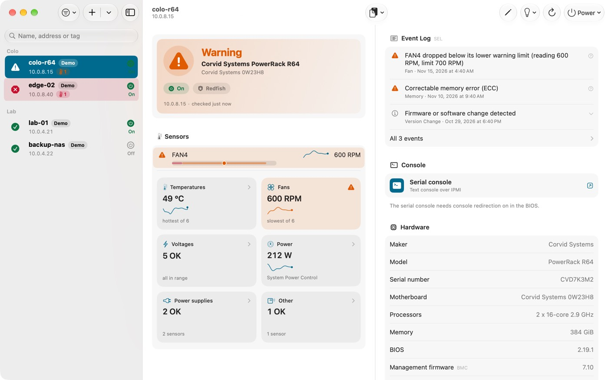
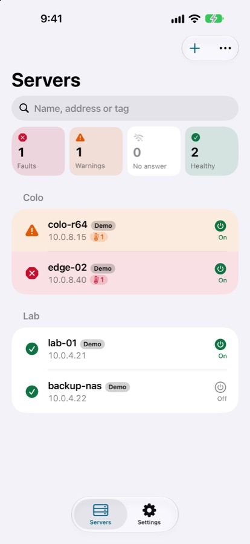
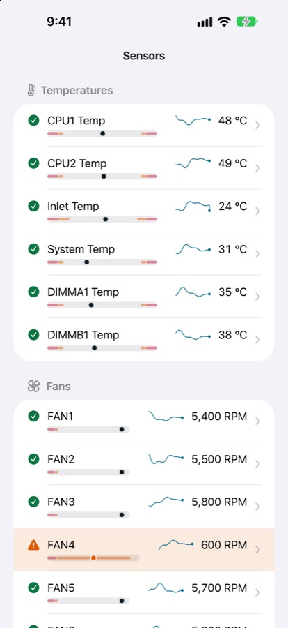
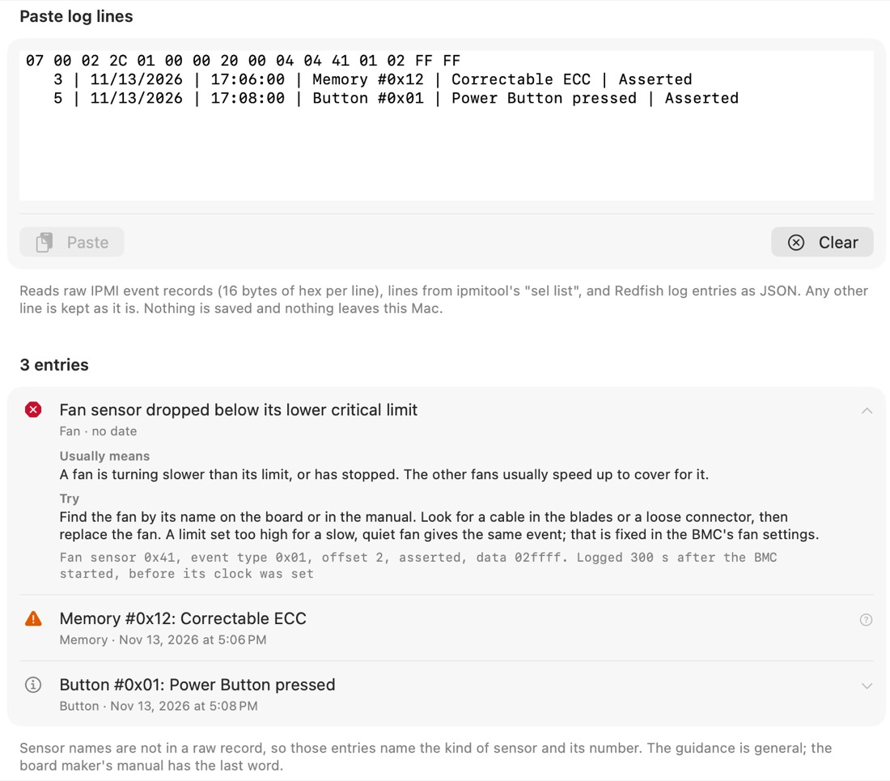
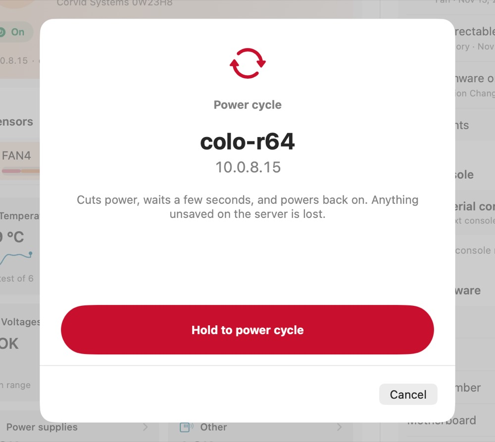
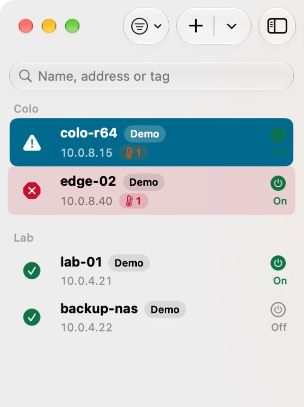
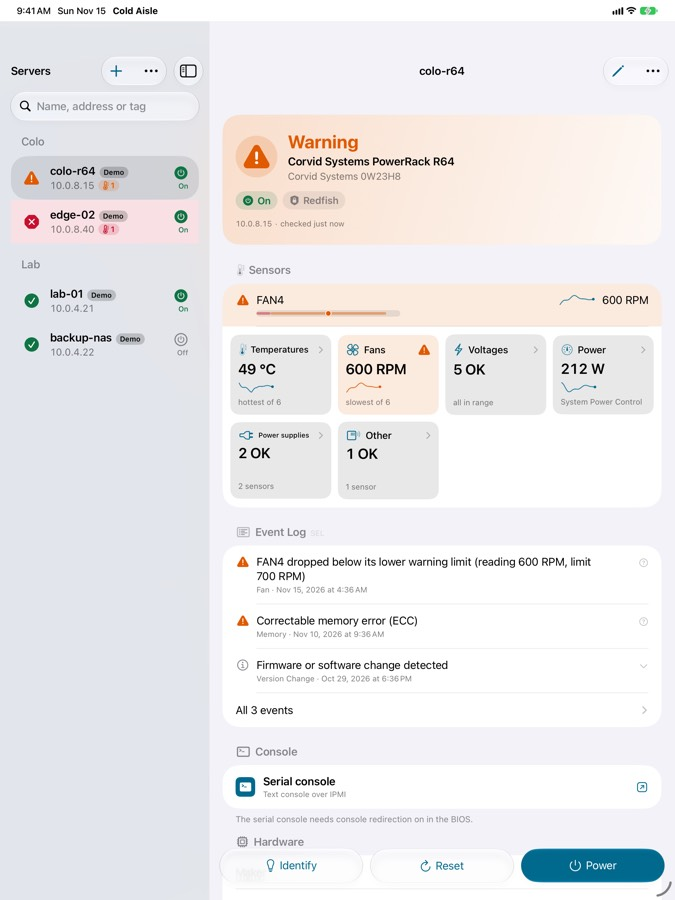

BMC client for IPMI 2.0 and Redfish
Server down? Still reachable.
Cold Aisle talks to your servers' BMCs from an iPhone, iPad or Mac. The BMC is the small computer on the server board that stays up as long as the box has power, even when the OS is hung, shut down or not installed yet.
colo-r64- OSRunningHung
- SSHOpenTimed out
- DashboardLiveBlank
- BMCAwake
The OS is gone, but the BMC still answers, so you still have a way in.
AvailabilityComing to iPhone, iPad and Mac.
Free tools for an outage. You don't need the app.
- Event decoderPaste raw IPMI event records or SEL lines and read them in plain English. Nothing leaves your browser.
- ipmitool cheat sheetPower, sensors, the event log, serial over LAN and BMC resets, with the matching Redfish calls.
- 3 a.m. checklistWhat to do when a server stops answering, in order. Bookmark it, or print it for the rack.
There's nothing in the middle.
Nothing to install on the server, no account, and no server of ours. The app talks to your BMCs directly, or through your own Mac running Cold Aisle if you turn that on. It doesn't collect anything.
It uses Redfish where the server has it and falls back to IPMI where it doesn't.


Many BMC tools stop at one brand or one protocol.
| One-vendor app | Redfish-only app | Terminal with ipmitool | Cold Aisle | |
|---|---|---|---|---|
| Servers from different makers in one list | No | Redfish boards | Yes | Yes |
| Older boards with no Redfish | Varies | No | Yes | Yes, over IPMI |
| Redfish where the board has it | Varies | Yes | No | Yes |
| Hardware event log in plain English | Varies | Varies | No | Yes |
| Name, address and press and hold before a power action | Varies | Varies | No | Yes |
Compared by kind of tool. Individual apps differ.
Where BMC tools usually let you down
- Locked to one brand
- Cold Aisle speaks IPMI 2.0 and Redfish, so Supermicro, Dell iDRAC, HPE iLO, ASRock Rack and other boards can sit in the same list.
- Certificates and sign-in
- You see a Redfish server's certificate before you type a password. A self-signed one gets pinned the first time and checked on every connection after that. Each server also shows you what works on it and what doesn't.
- Older boards left behind
- Older or second-hand boards without a Redfish license work fine over IPMI.
Every reading, against the limits the board reports.
Temperatures, fans, voltages and power supplies, with anything out of range at the top. Each temperature and fan also shows where it's been over the last day.
- CPU1 Temp48°C, in range
- Inlet Temp24°C, in range
- 12V12.1V, in range
- FAN15,400RPM, in range
- FAN4600RPM, below its lower warning limit
- Warning band
- Critical band
- Range over the last day
- Reading now
Illustration with example values.

The hardware event log, in plain English.
The raw bytes are one tap away if you want them. On the Mac, click an event to see what it usually means and what to try. You can also paste raw log lines from a ticket or a terminal and read them the same way.
When you're done, copy the server's state as text and paste it into the ticket.

So you don't reboot the wrong box at 3 a.m.
Before any power action, the app shows the server's name and address in big type and makes you press and hold.
- Power on
- Shut down
- Reset
- Force off
- Power cycle
Blink the identify light to find the right machine in the rack.

All your servers in one window.
Servers sit in a sidebar, grouped by tag. Each state has its own shape as well as a color, so you can read it without relying on color.
- Green disc
- Orange triangle
- Crimson octagon
- Menu bar. The icon is a little rack while everything's fine and changes shape when something needs you.
- Windows. Pop any server into its own window to keep a few side by side.
- Bulk add. Paste a list to add a batch of servers at once.
- Serial console. Serial over LAN for firmware setup, the boot loader or a serial login.
- Web console. The BMC's own web console in a window, which only loads for the certificate you pinned.
- Firmware. See what each server runs, and with Pro send a new image over Redfish.
- Home Screen. On iPhone and iPad, keep the servers you care about on a widget.


Specification
| Protocols | IPMI 2.0 and Redfish |
|---|---|
| Works with | Any BMC that speaks IPMI 2.0 or Redfish, though what each one offers depends on its maker, firmware and licenses. |
| Passwords | Stay in the device's Keychain. |
| Redfish certificates | If a pinned certificate ever changes, the app stops and tells you. |
| IPMI sessions | Only signs in with authentication and encryption on. It never uses the unprotected mode some BMCs still allow. |
| App lock | Face ID or Touch ID. |
| No hardware handy | Four demo servers are built in, so you can try every screen before you point it at real hardware. |
Free and Pro
| Free | Pro | |
|---|---|---|
| Servers | 2 | Unlimited |
| Health, sensors, event log | Included | Included |
| Identify light | Included | Included |
| Power control | Not included | Included |
| Serial console and BMC web console | Not included | Included |
| Notification on a warning or a fault | Not included | Included |
| Clearing the event log | Not included | Included |
| Home Screen widget | Not included | Included |
Pay monthly, yearly or once. You get the same features either way, and one purchase covers your Mac, iPhone and iPad.
What it doesn't do
There's no built-in graphical KVM. For that, the app opens the BMC's own web console.
Your device has to be able to reach the BMC's address, whether that's on the same network, through remote access into that network, or through your Mac.